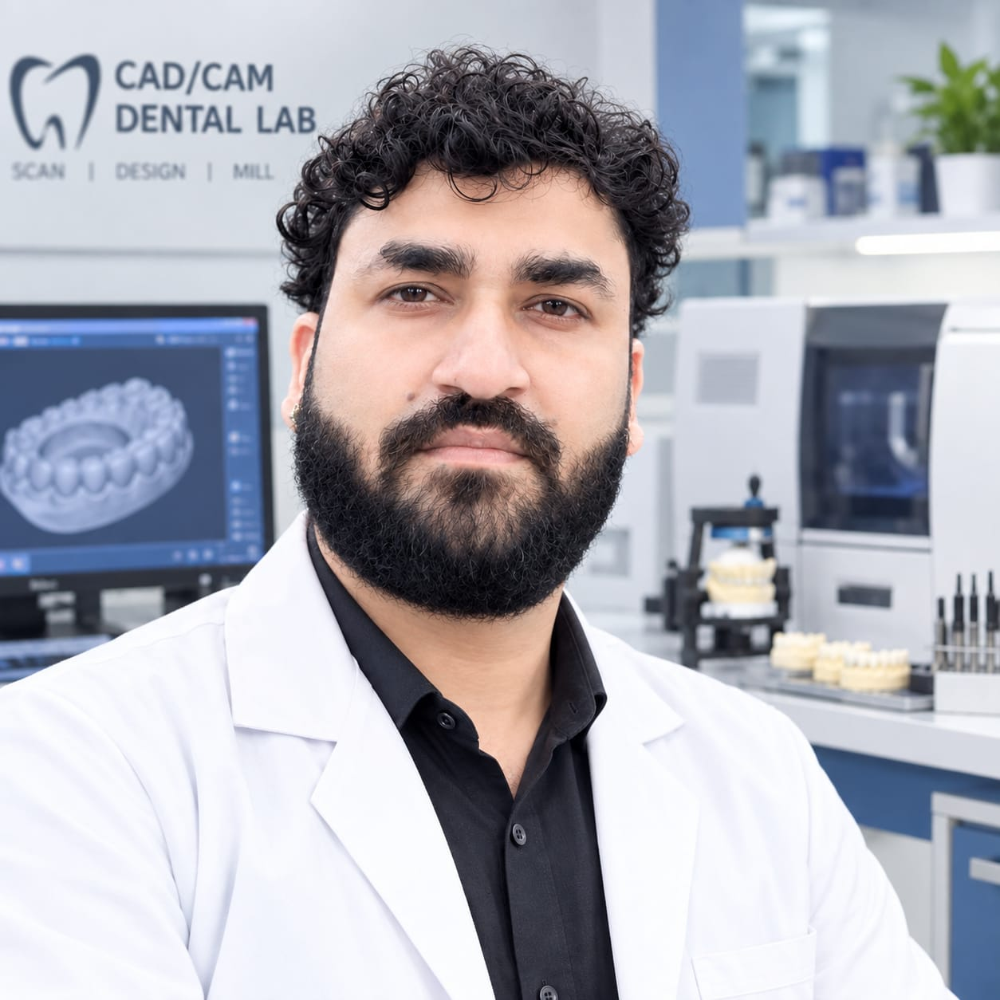
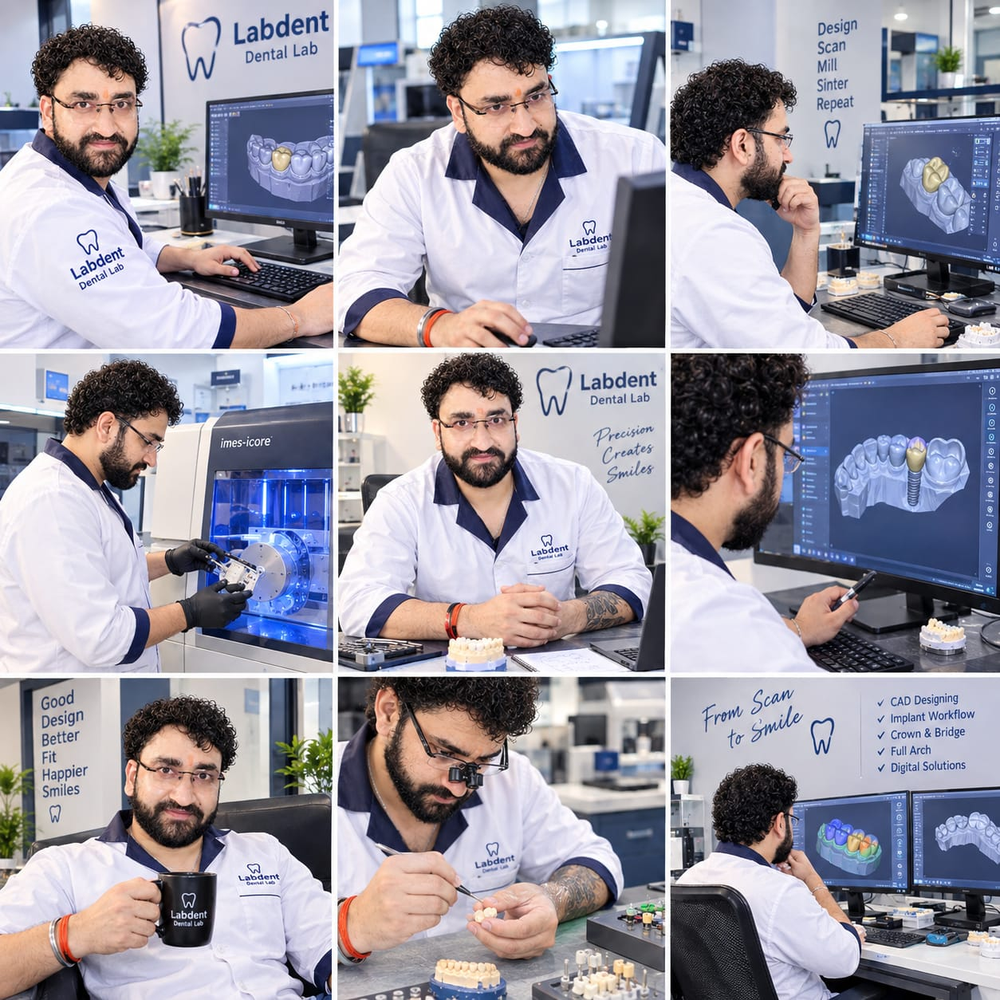

CAD Design ↗
Advanced digital design for anatomically considered, production-ready restorations.
Precision-led digital dentistry for clinicians who expect every margin, contact and occlusion to perform.

Years in
lab operations
Times Employee
of the Year
Employee of
the Month awards
From scan to smile,
every stage matters.
Deep technical knowledge, paired with a clear eye for anatomy, function and the details that make restorations feel real.
Advanced digital design for anatomically considered, production-ready restorations.
Master-level implant prosthetics, from case planning through emergence profile.
Confident scanning, milling and printing workflows that keep production moving.

Clean data in. Clear communication from the start.
Anatomy, occlusion and aesthetics held in balance.
Reliable production with quality control at every handoff.
I'm Neeraj Kumar Singh, a CAD/CAM Dental Technician and Department Head at Labdent Dental Laboratory, Gurugram. I lead digital lab operations with a focus on precision, predictable production and better clinical outcomes.
My work spans dental anatomy, implant prosthetics, crown & bridge, full-arch cases and the complete digital chain — from scanning and CAD design to milling and dental 3D printing.
View my experience ↗